Lead Product Designer · Strategy · Experience · Emerging Tech
Bringing clarity and vision
to complex enterprise products.
Design leader operating at the intersection of product, design, and engineering, with 15+ years of experience in large multinational and mid-size organizations such as Sunstice, Cisco, and Infor.
Expertise in enterprise SaaS, data-intensive products, data visualization, and system modernization. Strong track record of bringing clarity and product vision to complex systems by transforming intricate business processes and workflows into coherent, scalable, and user-centric solutions, while balancing user needs, technical constraints, and business objectives.
Background in Informatics and Visual Communication, with NNg UX Management certification and currently preparing for the PMP certification to reinforce strategic delivery skills. Fluent in English, French, and Romanian.
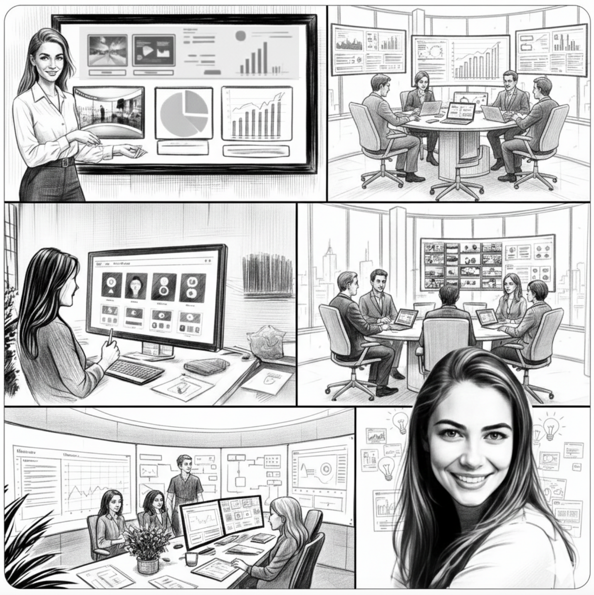
Selected Work
From Global Telecom (TV and Mobile) to Enterprise SaaS Supply Chain, I’ve led the UI/UX strategy for large-scale digital transformations. My approach integrates user research and collaborative design thinking to solve complex problems for multi-country deployments and diverse user profiles.

Sunstice · 2017–2025
Transformed a complex legacy ecosystem into a scalable, visual-first SaaS. Directed the UX strategy for 7+ modules, integrating predictive analytics for global leaders like L’Oréal, Heineken, and Royal Canin.

Cisco · 2015–2017
Launched the GigaTV experience across iOS, Android, mobile and tablet for millions of users.

Cisco · 2013–2015
Delivered VOD and Replay TV across 7 countries and raised user satisfaction.
Case Study
Commissioned to lead the full modernisation of a legacy system into BLOOM, a new scalable, modular SaaS platform that put user-centricity at the heart of supply chain management.
| Company | Sunstice (FuturMaster) |
| Period | 2017 – 2025 · 8 years |
| Role | Lead Product Designer |
| Teams | 8 international teams, France & China |
| Mentored | Up to 7 designers & integrators |
| Clients | L'Oréal, Heineken, Royal Canin, Total, Lactalis etc. |
| Tools | Adobe XD, Illustrator, Figma, Miro, Jira |
Platform Modules
Each module shaped through iterative research, ideation, and close collaboration with stakeholders, creating intuitive experiences that simplify complexity while maximising efficiency.
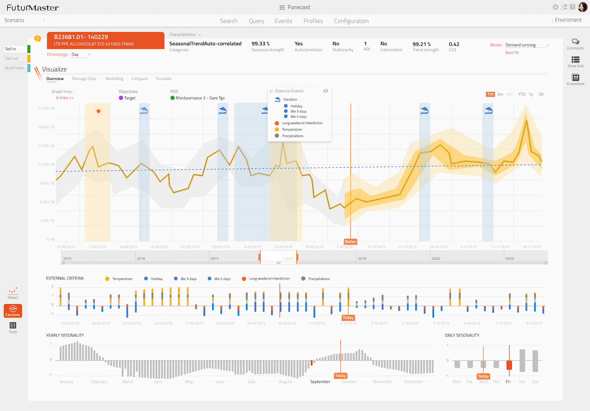
Module 01
Transformed a rigid, table-based interface into a fully visual, graph-driven experience. Users can clean, enrich, and analyse forecasts directly within the interface. Deep-dive below ↓
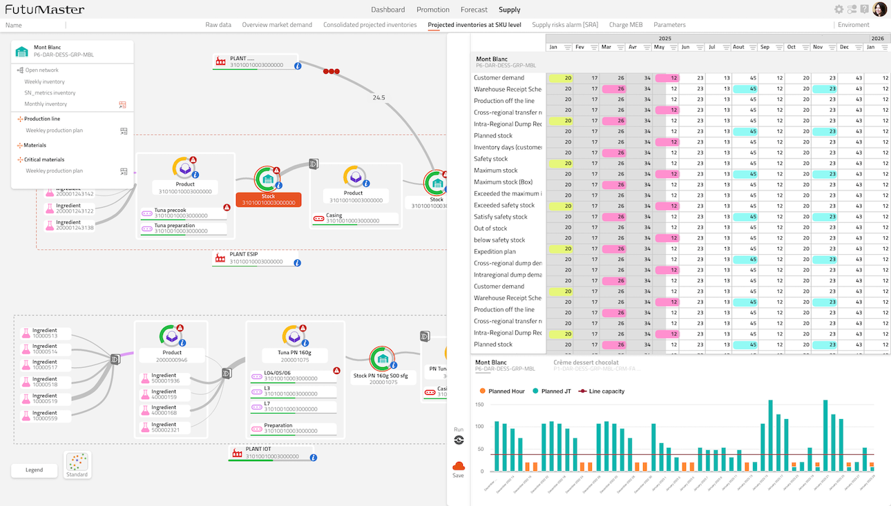
Module 02
Introduced a panoramic view allowing teams to visualise and adjust plans more intuitively, ensuring better control over stock management and production flows.
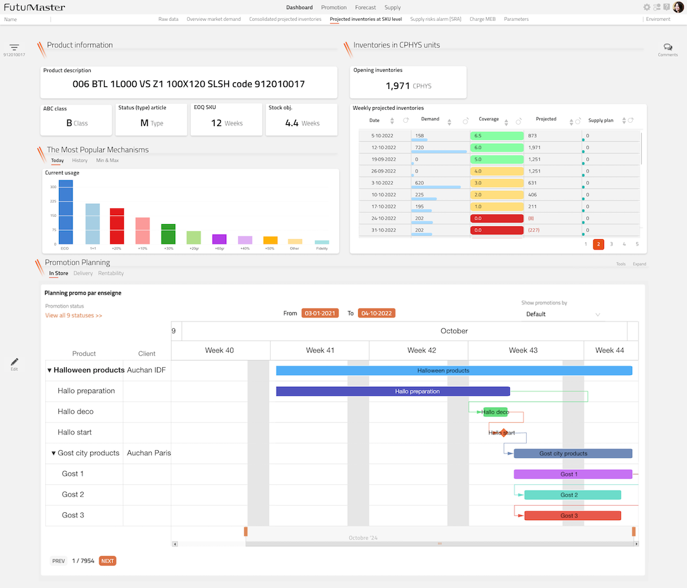
Module 03
Created dynamic dashboards that allow teams to monitor performance, align strategies, and collaborate efficiently across departments.
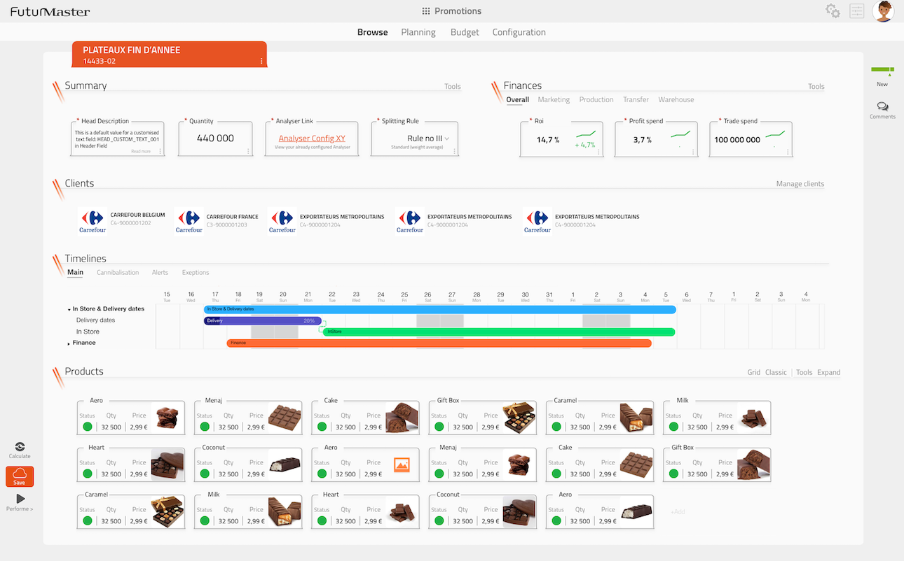
Module 04
Designed end-to-end Promotion Planning, Management, Optimisation and Analysis to ensure trade promotions achieve sales and financial objectives.
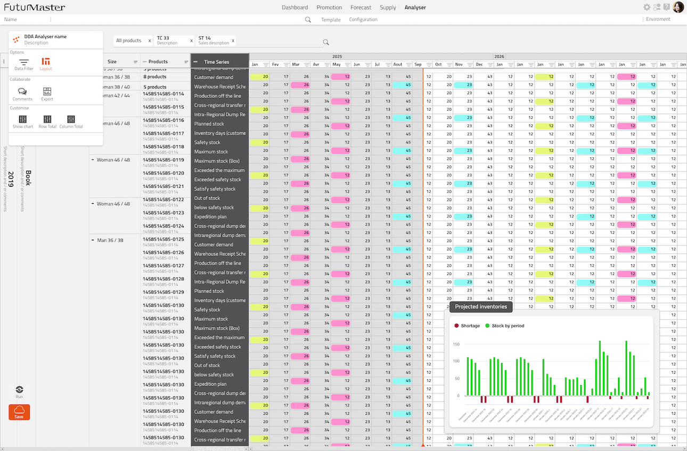
Module 05
Built an advanced data exploration module enabling deeper analysis, allowing users to analyse and optimise data to keep up with the ever-progressing business.

Module 06
Developed a structured and user-friendly interface for managing core business data, ensuring consistency and easy access across the organisation.
Design Process
Applied consistently across all modules and projects, grounded in real user needs, validated continuously with stakeholders, users, and developers.
Discovery
Ideation
Prototype
Feedback Loops
Process in action — Demand Planning Card
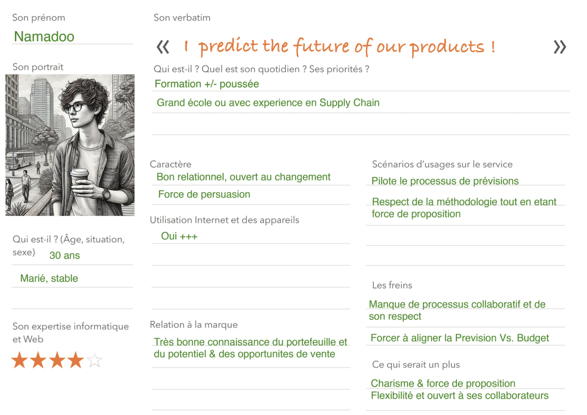
Demand Planner persona "Namadoo" and the full experience map, built in workshops with Professional Services, Architects & Customer Success.
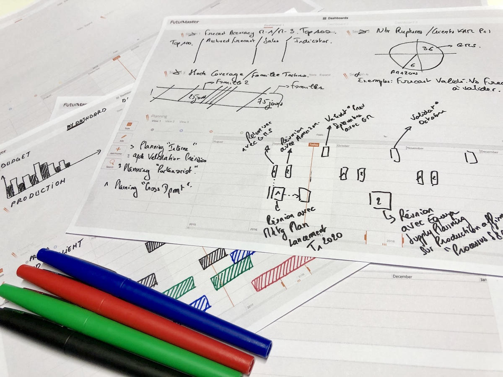
Crazy 8s and Studio Design sessions produced dozens of concepts. The team converged on a hybrid visual approach addressing both basic and advanced users.
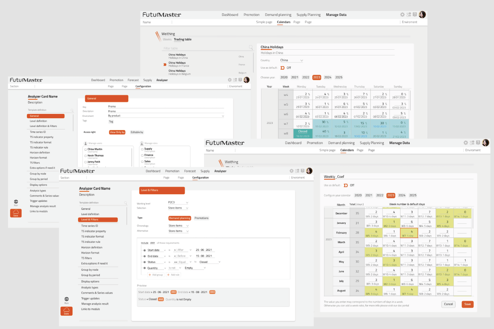
High-fidelity interactive prototypes with realistic data — used for stakeholder sign-off, developer handoff, and user testing.
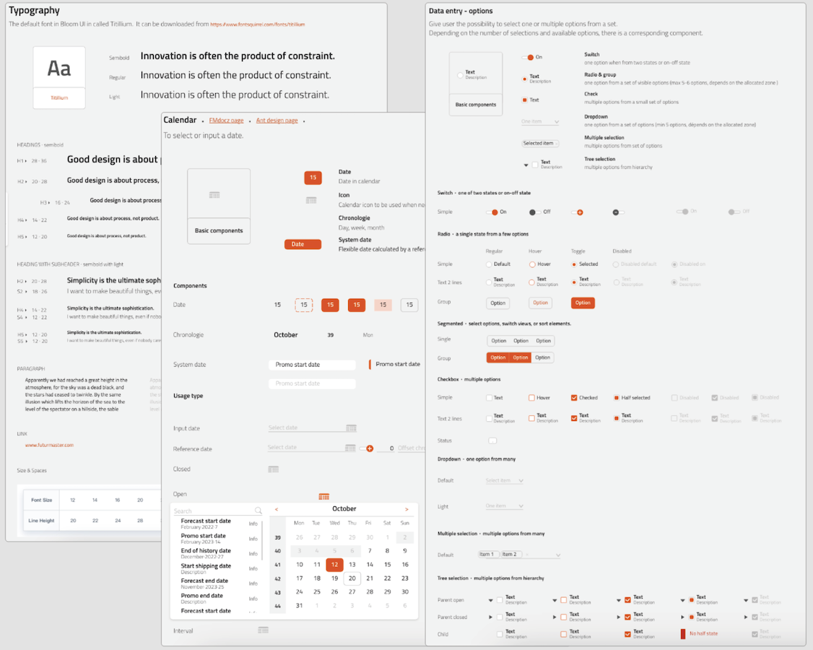
A shared design system kept all 7+ modules consistent across international teams in France and China.
Deep Dive · Demand Planning Card
A full end-to-end redesign: from a legacy table-based tool to a visual, graph-driven forecasting experience. This is the full design thinking journey.
The transformation at a glance
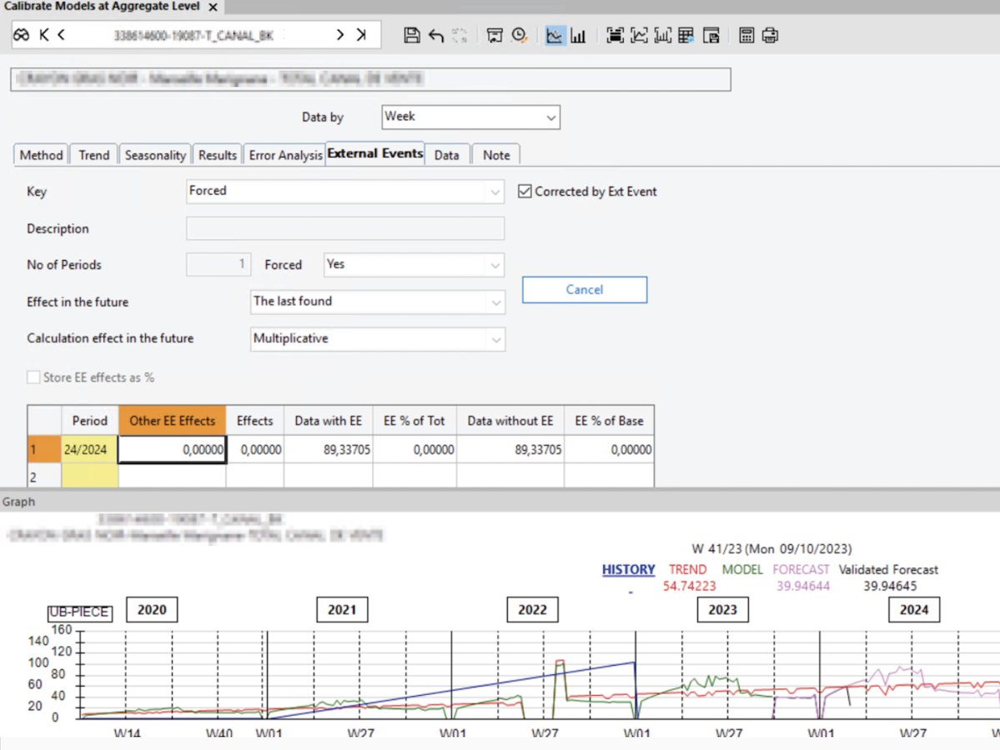
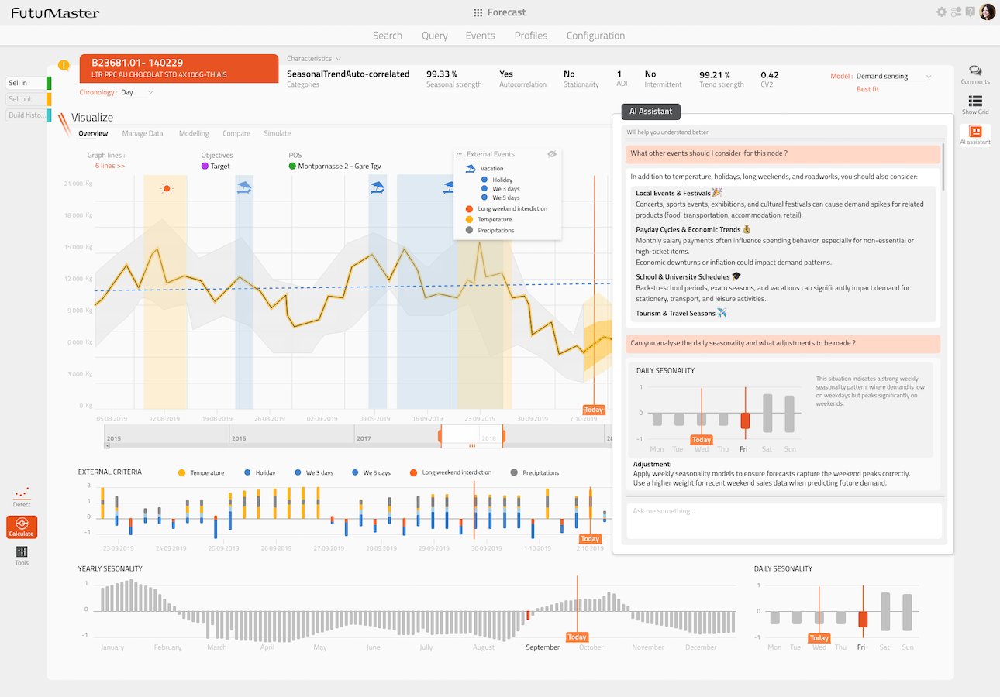
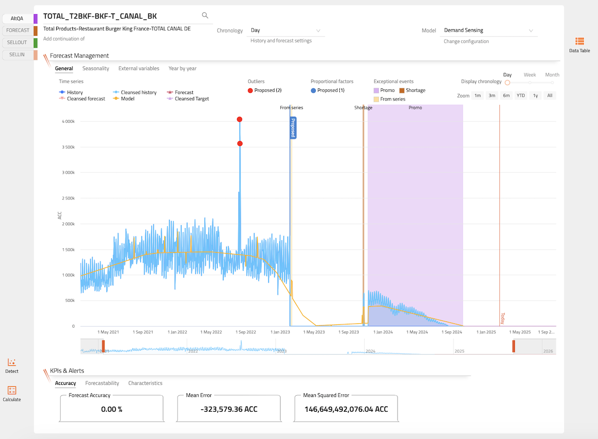
The Challenge
The legacy Demand Planning module relied on complex table-based configurations and manual inputs, time-consuming and error-prone. Hidden options, poor navigation, and weak information architecture reduced task completion speed by 50% and significantly lowered user satisfaction.
Problem Statement
Surfaced through workshops with Professional Services, Architects, and Customer Success teams, and validated against real usage data.
Design Thinking Journey
Persona
Namadoo, 30 · Demand Planner
Responsible for aligning market predictions with budget constraints. Strong supply chain experience. Uses the tool daily and needs it to be fast, reliable, and trustworthy.
"I predict the future of our products and I need tools that help me do that with confidence."
Key Pain Points
What We Changed
What Clients Say
"The Demand Planning Card interface is good looking, intuitive, and powerful — enhancing usability without sacrificing functionality. Furthermore it is highly configurable, easily making it an off-the-shelf solution to deliver a tailored, customised experience."
May 2025 · Verified Gartner Review
"Nice user interface. The Demand Planning Card is highly user friendly. The ability to analyse and calculate the impact of external variables. Flexible in configuration and provides fully customisable solution which fits our company."
June 2024 · Verified Gartner Review
"The end user interface is simple and intuitive. The ability to build custom reporting and modules that fit our requirements. It's clearly an evolving product and I am excited to see what further development will bring."
April 2022 · Verified Gartner Review
"Easily contactable tech support and development team. The solution is simple to use. Flexibility in configuration provides a fully customisable solution."
May 2024 · Verified Gartner Review
Case Study
At Cisco's Design Studio, I collaborated with cross-functional teams across Europe, Asia, and the USA to deliver tailored TV and media experiences for Liberty Global and Vodafone — two of the world's largest telecom operators.
Liberty Global — The Challenge
Process
Monthly trips to Amsterdam for reviews, feedback collection, and roadmap discussions. Built trust by actively listening to country managers and addressing regional user needs.
Analysed feedback to refine existing features. Aligned future features (VOD, Replay) with Liberty Global's specific goals, ensuring scalability across all 7 countries.
Facilitated collaboration between Dutch client teams and Cisco's French Design Studio, resolving misalignments and establishing a collaborative working model.
Led a cross-functional squad of PM, designer, product owner, and technical leader. Indirectly managed graphic and technical designers to align with Liberty Global's standards.
Impact
Significantly increased user satisfaction, validated by positive feedback from country managers across 7 markets
Transformed a tense partnership into a long-term collaborative relationship — improving Cisco's reputation within Liberty Global
Introduced VOD and Replay TV features, boosting adoption and market competitiveness
Liberty Global · TV set-top box
Improved set-top box experience, including VOD and Replay TV. Designed to work across multiple national markets with different content catalogues and cultural expectations.

Vodafone · Mobile app
Delivered companion TV app across 4 platforms by balancing brand requirements, UX quality, and technical constraints for millions of users.

Cisco Design Studio
Additional custom TV experiences crafted through Cisco's multi-disciplinary design studio, serving other major telecom clients.
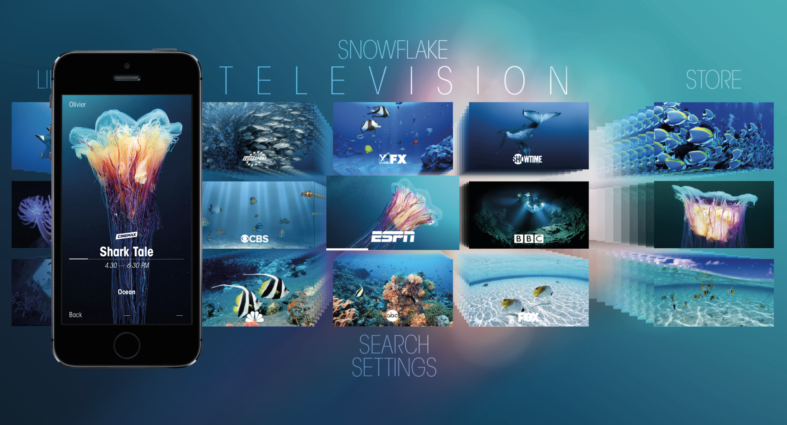
My Design Process
Not a checklist, but a way of working.
Here's how each step translated into real decisions on real projects, at Sunstice and at Cisco.
Discovery
Ideation
Prototyping
Feedback Loops
Delivery & Impact
Leadership
About
I'm a Lead Product Designer with 15+ years of experience bringing clarity and vision to complex enterprise software, transforming intricate business processes and workflows into coherent, scalable, and user-centric solutions.
I've worked across large multinationals and mid-size organisations (Sunstice, Cisco, Infor) with a background in Informatics and a Master's in Visual Communication & Marketing. I'm equally comfortable defining UX strategy, leading a design team, presenting to investors, or coding a prototype.
Having worked across multiple countries, I design for diverse user groups while balancing local specificities with global consistency and scalability. Recognised for leading and mentoring designers, and for influencing cross-functional, international teams across product, engineering, and business.
What I'm Looking For
I'm looking for a senior product role, either as a Lead / Senior Product Designer or in a Product management capacity, with a strong emphasis on strategy and experience.
I'm drawn to structured organisations working on complex products, where vision, collaboration, and long-term thinking are valued.
I thrive in environments where I can help clarify direction, align stakeholders, and elevate the overall product experience.
User Experience
Tools & UI
Visual & AI Tools
Planning & Delivery
Languages
Experience
Sunstice
2017 – 2025 · 8 years
Lead Product Designer · Enterprise SaaS & Supply Chain
Led the modernisation of a legacy supply chain system into BLOOM, a scalable SaaS platform. Delivered intuitive modules covering Demand Planning, Supply Planning, Dashboards, and Trade Promotions. Worked with 8 international teams in France and China. Mentored up to 7 designers and integrators.
· Drove a 35% increase in user adoption for global leaders like L'Oréal, Heineken & Royal Canin
· Achieved a 4.8★ Gartner rating, reflecting high customer satisfaction (98 reviews)
· Secured 2 investors: Cathay Capital & Sagard
· Scaled enterprise operations by 300%, expanding from 2 to 6 major contracts within 5 years
Cisco
2013 – 2017 · 4 years
Senior Product Designer · Telecom & Media
Led design of custom set-top box interfaces and companion mobile apps for Liberty Global and Vodafone. Worked with international squads across Europe, Asia, and the USA. Balanced UX and UI strategies across 10+ countries. Travelled regularly to Amsterdam and Munich for client alignment.
· Enhanced Liberty Global set-top box usability across 7 markets
· Introduced Replay & VoD features
· Delivered Vodafone GigaTV across 4 platforms
· Transformed tense client relationship into a long-term partnership
Infor
2012 – 2013 · 1 year
UX Engineer · Business Intelligence
First designer on the SyteLine ERP application. Established and championed design practices, evangelised UX/UI principles, and drove a shift toward user-centric thinking across the organisation. Bridged UI design with front-end development.
· Defined SyteLine's look & feel
· Positioned the app as a more competitive solution within the BI product suite
Freelance
2009 – 2013 · 4 years
Product, UX & UI Designer · SaaS & Mobile
Led end-to-end design of 10+ web, 7 mobile, and 1 educational product for clients in Europe, USA, and Australia. Designed and built Karbostream, an educational platform for US teachers. Advised stakeholders on UX/UI best practices.
· 5 Android games with Top 100 rankings
· Karbostream adopted by 4 schools in North & South Carolina
Masstech
2007 – 2009 · 2 years
UI Engineer · Enterprise Prototyping
Created 10+ prototypes and cohesive UI elements for enterprise applications in the R&D department. Worked with sales teams to balance functionality and aesthetics across 8 main prototyping projects.
Engineered high-fidelity prototypes for major international forums (NAB & IBC), directly enabling the sales team to secure new business through visual innovation.
Education & Certifications
In Progress
Project Management Professional (PMP)
Project Management Institute
January 2026
Conduire et piloter un projet innovant avec des méthodes agiles
Oriion
April 2025
UX Management Certification
Nielsen Norman Group
2006 – 2008
Master of Arts · Visual Communication & Marketing
West University of Timisoara
2002 – 2006
Bachelor of Science · Informatics
West University of Timisoara
Domains & Industries
Contact
I'm currently open to senior product design and product management roles, particularly in structured organisations working on complex, meaningful products.